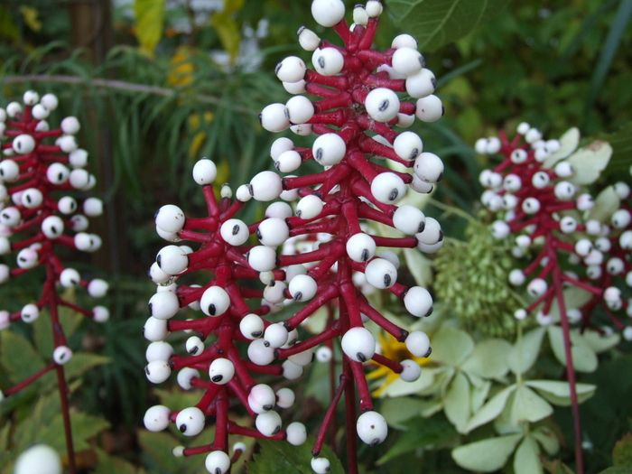
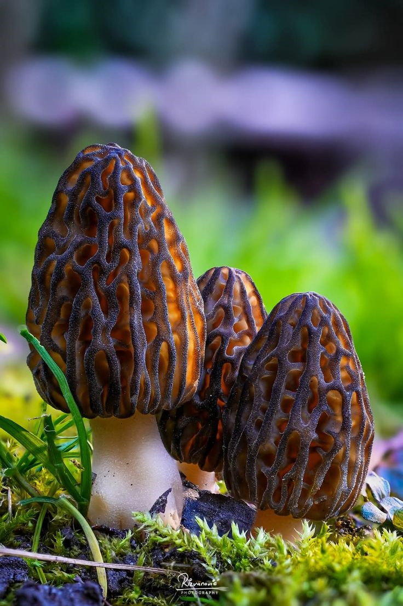
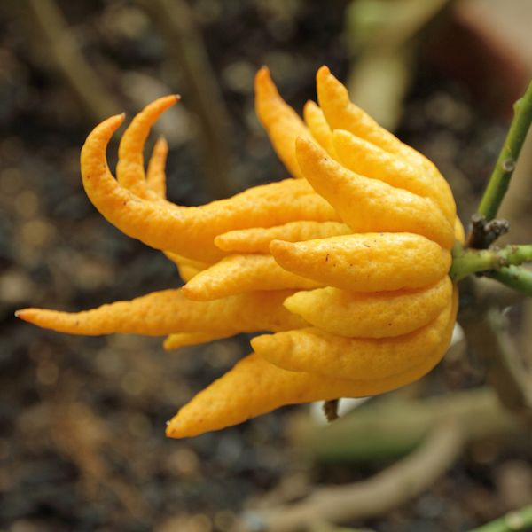
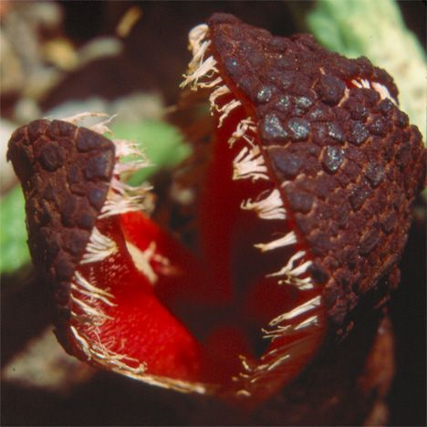
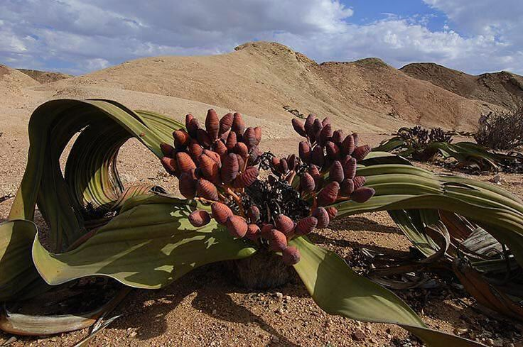
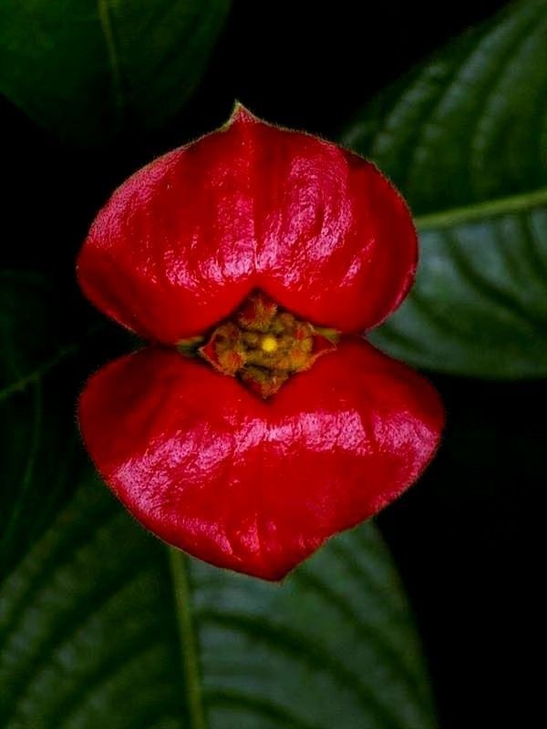

Tanaman paling unik
Kembali

Actaea Pacypoda
Actaea pachypoda, atau yang lebih dikenal dengan sebutan Mata Boneka (Doll's Eyes) atau white baneberry, adalah tanaman hias tahunan yang unik namun sangat beracun. Tanaman ini berasal dari Amerika Utara bagian timur dan tumbuh subur di area hutan yang teduh serta lembap.

False Morels
False morels (jamur morel palsu) adalah istilah untuk sekelompok spesies jamur yang secara visual mirip dengan jamur morel sejati (edible), namun sebenarnya beracun dan dapat mematikan. Spesies yang paling terkenal dalam kelompok ini adalah Gyromitra esculenta.

Budha Hand
Jeruk Tangan Buddha (Citrus medica var. sarcodactylis) adalah varietas jeruk sitrun yang sangat unik karena bentuk buahnya yang tersegmentasi menyerupai jari-jari tangan manusia. Tanaman ini berasal dari wilayah India Timur Laut dan Tiongkok Barat Daya, serta telah dibudidayakan selama ribuan tahun.

Hydnora Africana
Hydnora africana (dikenal sebagai Jackal Food) adalah salah satu tumbuhan paling aneh di dunia yang berasal dari Afrika bagian selatan. Tumbuhan ini merupakan parasit akar sejati yang menghabiskan hampir seluruh siklus hidupnya di bawah tanah.

Welwitschia Mirabilis
Welwitschia mirabilis adalah tumbuhan purba unik yang dijuluki sebagai "fosil hidup" karena telah ada sejak era Mesozoikum (zaman dinosaurus) dan merupakan satu-satunya spesies yang masih hidup dalam familinya. Tanaman ini berasal dari Gurun Namib di Namibia dan Angola.

Psychotria Elata
Psychotria elata, atau yang lebih populer dikenal sebagai Hot Lips atau Hooker's Lips, adalah tanaman tropis unik yang terkenal karena bentuk daun pelindungnya yang sangat mirip dengan bibir manusia yang memakai lipstik merah menyala. Julukan "Mick Jagger" diberikan karena kemiripannya dengan bibir tebal ikonik milik vokalis band The Rolling Stones tersebut.